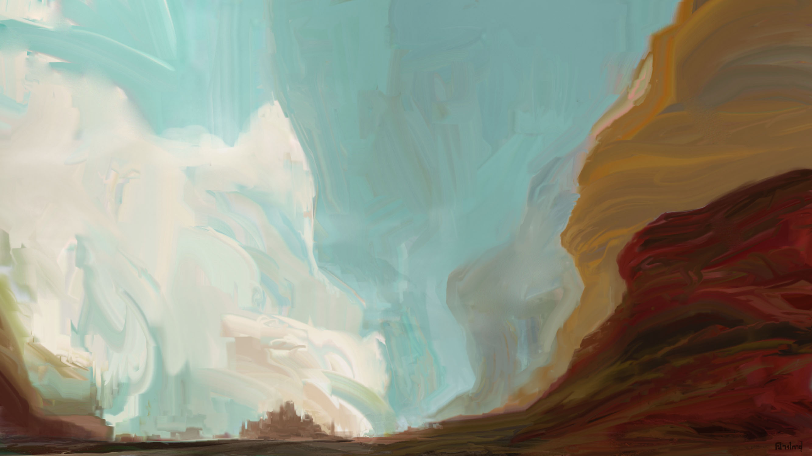
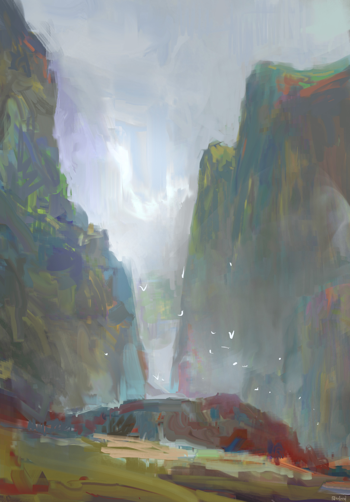

<center>
<title>Simple Static Website Generator</title><font color="#333333" face=""Century Gothic", CenturyGothic, AppleGothic, sans-serif" size="10em"><br><h3>Simple Static Website Generator</h3><br>
<font color="#222222" size="5em">1. Create a folder with the name of your site title.<br>
2. Add images and text to the folder.<br>
3. Run the script to create a .html file.<br><br><br> <br>
 <br>
 <br>
 <br>
